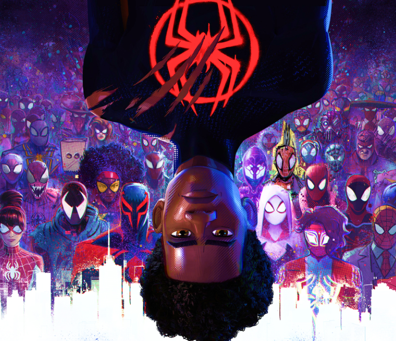
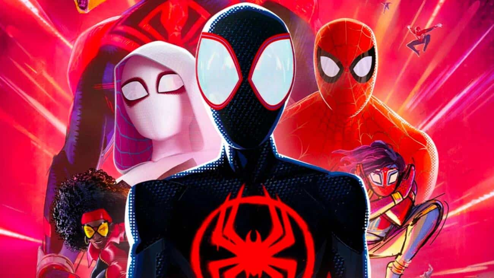

Homem Aranha:
Através do Aranhaverso
| Sala | Fileira | Poltrona |
| 01 | F | 8 |
| Data | Sessão | Valor |
| 1 Jul 23 | 16:15 | R$ 19,99 |


Sinopse
"Spider-Man: Into the Spider-Verse" é uma animação eletrizante que mergulha no multiverso do Homem-Aranha de uma forma inovadora e emocionante. A trama gira em torno de Miles Morales, um adolescente do Brooklyn que descobre ser o Homem-Aranha de uma realidade paralela. Ele se vê envolvido em uma batalha contra o Rei do Crime, que ameaça destruir Nova York com a abertura de portais interdimensionais. Ao longo de sua jornada, Miles encontra versões alternativas do Homem-Aranha, como Peter Parker, Gwen Stacy e outros, unindo forças para deter a ameaça.